The Microsoft Bot Framework
Overview
Software bots are everywhere. You probably interact with them every day without realizing it. Bots, especially chat and messenger bots, are changing the way we interact with businesses, communities, and even each other. Thanks to light-speed advances in artificial intelligence (AI) and the ready availability of AI services, bots are not only becoming more advanced and personalized, but also more accessible to developers.
Regardless of the target language or platform, developers building bots face the same challenges. Bots require input and output capabilities. Bots need language and dialog logic. Bots need to be responsive, scalable, and extensible. They need to work cross-platform, and they need to interact with users in a conversational manner and in the language the user chooses. The Microsoft Bot Framework provides the tools developers need to build, connect, manage, and publish intelligent bots that interact naturally with users using a range of services.
In this lab, you will create a bot using Visual Studio Code and the Microsoft Bot Framework. Then you will interact with the bot using Skype — one of many popular services that bots built with the Microsoft Bot Framework can integrate with.
Objectives
In this hands-on lab, you will learn how to:
- Create an Azure Web App to host a bot
- Register a bot
- Implement a bot using Visual Studio Code, Node.js, and JavaScript
- Debug the bots that you build
- Publish a bot to Azure and interact with it using Skype
Prerequisites
The following are required to complete this hands-on lab:
Exercises
This hands-on lab includes the following exercises:
Estimated time to complete this lab: 60 minutes.
Exercise 1: Create an Azure Web App
The first step in creating a bot is to provide a location for the bot to be hosted. Azure Web Apps are perfect for hosting bot applications. In this exercise, you will create and configure an Azure Web App.
-
Open the Azure Portal in your browser. If asked to login, do so with your Microsoft Account.
-
Click + New, followed by Web + Mobile and then Web App.

Creating a new Azure Web App
-
Enter a name such as "factbot" (without quotation marks) into the App name box. This name must be unique within Azure, so make sure a green check mark appears next to it. Make sure Create new is selected under Resource Group and enter the resource-group name "BotsResourceGroup" (again, without quotation marks). Then click Create.

Configuring a new Web App
-
Click Resource Groups in the ribbon the left, followed by BotsResourceGroup to open the resource group created for the Web App.

Opening the resource group
-
Wait until Last deployment changes from "Deploying" to "Succeeded" indicating your Web App has been successfully deployed.
You may need to refresh the page in your browser from time to time to see the most recent deployment status.

Successful deployment
Your Azure Web App is now provisioned and ready to host a bot. The URL of the Web App is http://appname.azurewebsites.net, where appname is the name you entered for the Web App in Step 3 (for example, http://factbot.azurewebsites.net). If you would like, you can type the URL into your browser's address bar and see the placeholder page that was created for the app.
Exercise 2: Register a bot
The next step in building a bot is registering it with the Microsoft Bot Framework. Among other things, the registration process lets the Microsoft Bot Framework know where to find your bot on the Web, and it generates an app ID that uniquely identifies your bot as well as an app password that facilitates access to it.
-
Open the Microsoft Bot Framework portal in your browser. If you are not signed in, click Sign in in the upper-right corner and sign in with your Microsoft Account.
-
Click Register a bot in the menu at the top of the page.
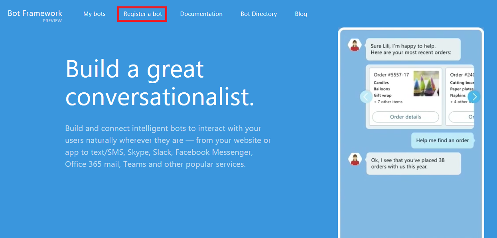
Registering a bot
-
In the "Bot profile" section, type "Factbot" (without quotation marks) in the Name field. Type a bot handle such as "Factbot" into the Bot handle field, and enter a brief description of your bot into the Description field.

Registering a bot profile
-
Scroll down to the "Configuration" section and in the Messaging endpoint field, enter the value below, replacing appname with the Azure Web App name you entered in Exercise 1, Step 3. Then click the Create Microsoft App ID and password button.
https://appname.azurewebsites.net/api/messages
Bot messaging endpoints can only communicate over secure protocols. Observe that the messaging endpoint URL uses HTTPS rather than HTTP.
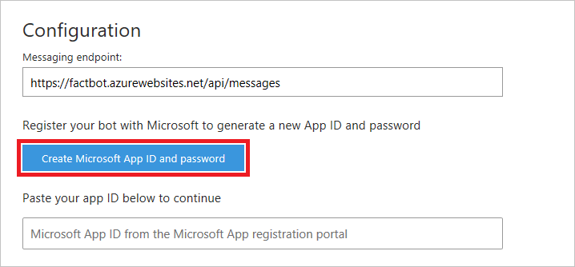
Configuring a bot messaging endpoint
-
An app ID is automatically generated for your bot. Paste the app ID into a text file and save the file so you can easily retrieve the app ID later. Then click Generate an app password to continue to create an app password.

Generating an app password
-
Copy the password into same text file in which you stored the app ID, and then save the file. You will not be able to retrieve this password after this step, but will be required to use it in a later exercise. Once the password is saved, click Ok to dismiss the dialog.
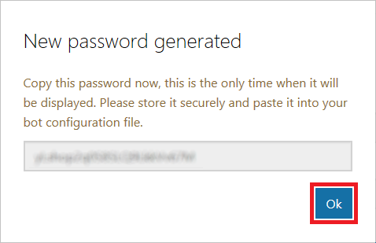
The app password
-
Click the Finish and go back to Bot framework button to return to the bot registration page.
-
Check the box at the bottom of the form, and then click the Register button. Finish up by clicking OK to dismiss the dialog that informs you that your bot was successfully registered.

Completing the bot registration
-
Leave the ensuing page open in your browser so you can easily return to it later.
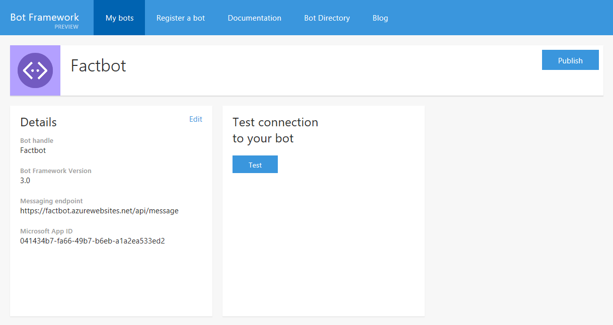
Completed bot registration
Your bot is now registered with the Microsoft Bot Framework. The next step is to implement the bot. For that, you will use Visual Studio Code.
Exercise 3: Set up and configure a bot project
If you haven't installed Visual Studio Code, take a moment to do so now. You can download Visual Studio Code from http://code.visualstudio.com. You should also install Node.js if it isn't already installed. Both products work cross-platform and can be installed on Windows, macOS, or Linux.
An easy way to determine whether Node.js is installed is to open a terminal window or Command Prompt window and execute a node -v command. If the Node.js version number is displayed, then Node.js is installed.
-
Open a terminal window or a Command Prompt window and use an md or mkdir command to create a directory named "Factbot" in the location of your choice. This is the directory that will hold the source code files for your bot.
-
Use a cd command to make the directory that you just created the current directory. Then type the following command to start Visual Studio code in that directory (note the period at the end of the command):
code .
-
In Visual Studio Code's Explorer panel, click the New File button to create a new file in the "Factbot" directory. Name the file app.js.

Adding a new file to the project
-
Add the following line of code to app.js:
console.log("Hello world!");
Then use the File -> Save command (or simply press Ctrl+S) to save the file.
-
Open a TERMINAL window in Visual Studio Code by selecting Integrated Terminal from the View menu. The TERMINAL window will appear at the bottom of your workspace.

Opening the Integrated Terminal
-
In the TERMINAL window, execute the following command to install the Microsoft Bot Builder SDK:
npm install --save botbuilder
-
Now execute this command in the TERMINAL window to install the packages needed to leverage REST-based messaging routes in your code:
npm install --save restify
-
Execute the following command in the TERMINAL window to run the application and output "Hello world!":
node app.js
-
The next step is to generate a bot configuration file and insert the app ID and app password generated in the previous exercise. To begin, click the Debug button in the ribbon on the left side of Visual Studio Code.

Opening the debugger
-
Click the green arrow at the top of the debugging panel and then select Node.js from the drop-down list. A new file named launch.json will be created. When prompted to set up the launch configuration file, click Close.

Creating a new launch file
-
Add the "env" section highlighted below to the "configurations" section of launch.json, and include the app ID and app password generated for your bot in Exercise 2.
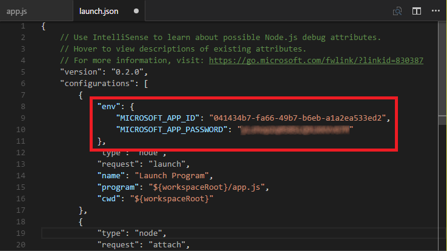
Adding bot registration values
-
Save your changes to launch.json. Then close the file.
-
Click the Explorer button on the left, and then click the New Folder button to create a new folder named "en" (without quotation marks) in the "Factbot" directory.
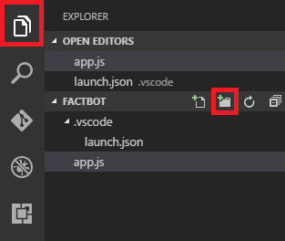
Adding a new folder
The "en" folder is not required for your bot to work correctly. However, the Bot Builder SDK will display warnings in the Integrated Terminal if a default language folder is not present.
Your bot project is now set up and ready to go. The next step is to write code to provide simple responses to a user from your bot, and then add conversation logic to provide a more meaningful experience.
Exercise 4: Add conversation logic to your bot
The entire goal of creating a bot is to have intelligent, automated interactions with users. Now that registration and project setup are complete, you can enhance the code for your bot to make interactions a little richer.
-
In Visual Studio Code, open app.js if it isn't already open. Replace the contents of the file with the following JavaScript code:
var builder = require('botbuilder');
var connector = new builder.ConsoleConnector().listen();
var bot = new builder.UniversalBot(connector);
bot.dialog('/', [
function (session) {
builder.Prompts.text(session, "Hello, and welcome to Factbot! What's your name?");
},
function (session, results) {
session.userData.name = results.response;
builder.Prompts.number(session, "Hi " + results.response + ", before we get started, let me find out a few things about you. How many years have you been coding?");
},
function (session, results) {
session.userData.yearsCoding = results.response;
builder.Prompts.choice(session, "What language do you love the most?", ["C#", "JavaScript", "TypeScript", "Visual FoxPro"]);
},
function (session, results) {
session.userData.language = results.response.entity;
builder.Prompts.choice(session, "What's your favorite midnight snack?", ["Pizza", "Poptarts", "Chicken and waffles", "Kale salad"]);
},
function (session, results) {
session.userData.snack = results.response.entity;
session.send("Okay, I think I've got it " + session.userData.name +
": You've been writing code for " + session.userData.yearsCoding + " years," +
" love to use " + session.userData.language + ", and" +
" you prefer " + session.userData.snack + " as a midnight snack.");
}
]);
-
Save your changes to app.js. Then, In the TERMINAL window, execute the following command to run your bot:
node app.js
-
Type "hello" (without quotation marks) and press Enter to wake up your bot. Factbot will now begin a guided conversation.

"Waking up" the bot
-
Answer the questions Factbot prompts you with.
Bots created with the Microsoft Bot Framework are smart enough to understand variations in your responses. For example, you can type "2", "JavaScript", or "javascript". Factbot will understand that these are the same response.

Interacting with your bot
-
Now let's modify Factbot to use an external REST-based API to retrieve random facts. In Visual Studio Code, replace the contents of app.js with the following code:
var builder = require('botbuilder');
var https = require('https');
var connector = new builder.ConsoleConnector().listen();
var bot = new builder.UniversalBot(connector);
bot.dialog('/', [
function (session) {
builder.Prompts.text(session, "Hello, and welcome to Factbot! What's your name?");
},
function (session, results) {
session.userData.name = results.response;
builder.Prompts.number(session, "Hi " + results.response + ", before we get started, let me find out a few things about you. How many years have you been coding?");
},
function (session, results) {
session.userData.yearsCoding = results.response;
builder.Prompts.choice(session, "What language do you love the most?", ["C#", "JavaScript", "TypeScript", "Visual FoxPro"]);
},
function (session, results) {
session.userData.language = results.response.entity;
builder.Prompts.choice(session, "What's your favorite midnight snack?", ["Pizza", "Poptarts", "Chicken and waffles", "Kale salad"]);
},
function (session, results) {
session.userData.snack = results.response.entity;
builder.Prompts.confirm(session, "Now that I better understand your personality, would you me to grab a random, interesting fact for you to enjoy?");
},
function (session, results) {
session.userData.action = results.response;
if (session.userData.action == true) {
var optionsget = {
host : 'traininglabservices.azurewebsites.net',
port : 443,
path : '/api/Facts/1',
method : 'GET'
};
var reqGet = https.request(optionsget, function(res) {
res.on('data', function(factResult) {
session.send(factResult.toString());
});
});
reqGet.end();
reqGet.on('error', function(e) {
console.error(e);
});
session.send(session.userData.name.toUpperCase() + ", DID YOU KNOW:");
}
else {
session.send("Okay, I think I've got it " + session.userData.name +
": You've been writing code for " + session.userData.yearsCoding + " years," +
" love to use " + session.userData.language + ", and" +
" you prefer " + session.userData.snack + " as a midnight snack.");
}
}
]);
-
Save your changes to app.js. In the TERMINAL window, press Ctrl+C to terminate the running app.js file. Then start the modified bot using the following command:
node app.js
-
Type "hello" (without quotation marks) and press Enter to wake up your bot. Answer the questions it presents to you. When Factbot asks "would you like me to grab a random, interesting fact for you to enjoy," respond by typing "yes" (again, without quotation marks). After a short pause, a random fact will appear in the TERMINAL window.
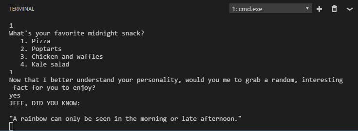
Random fact displayed by Factbot
In this exercise, you built and tested a functional bot that leverages built-in features of the Microsoft Bot Framework, and added additional code to call an external REST-based API service. The bot is almost ready to be published to Azure. But first, it is prudent to learn how to debug bots in Visual Studio Code.
Exercise 5: Debug your bot
The Microsoft Bot Framework supports a number of mechanisms for debugging bots, including the Bot Framework Emulator. In this exercise, you will learn how to use Visual Studio code to debug bots by setting breakpoints and stepping through code.
-
In Visual Studio Code, open launch.json for editing. Add the "console" property highlighted below, and then save your changes.
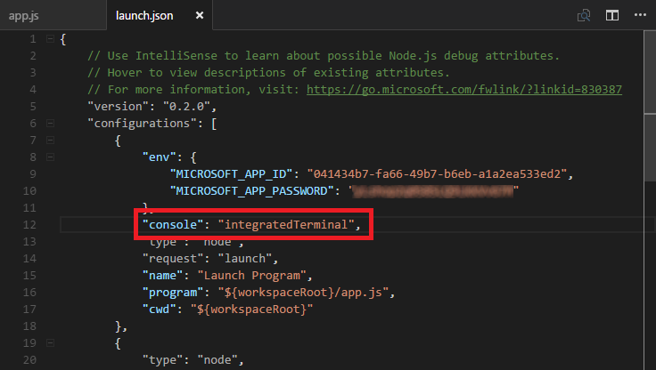
Modifying launch.json
-
Open app.js and add a breakpoint at line 41 by clicking in the margin to the left of the line number.

Setting a brekpoint in app.js
-
Click the Debug button in the ribbon on the left, and then click the green arrow to start a debugging session.

Starting a debugging session
-
Type "hello" into the TERMINAL window and press Enter. Then answer the bot's questions, and be sure to answer "yes" when asked if you want to see a random fact.
-
Visual Studio Code will break on line 41. Hover over any variable or parameter to see its value. Then click the Step Over button a few times to step through the code.
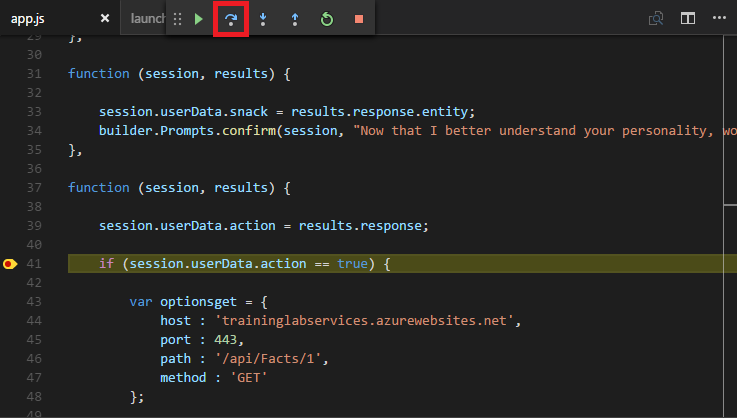
Stepping through the code
-
Click the Stop button to end the debugging session.
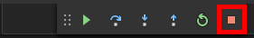
Ending a debugging session
At this point, you have a fully functioning bot. The next step is to publish it to your Azure Web App so it can be used with external applications such as Skype.
Exercise 6: Deploy the bot to Azure
In this exercise, you will deploy your bot to the Azure Web App you created earlier, and you will use OneDrive as the deployment source.
-
Return to the Azure Portal and to the resource group named "BotsResourceGroup" you created in Exercise 1.
-
Click the Azure Web App that you provisioned in Exercise 1.
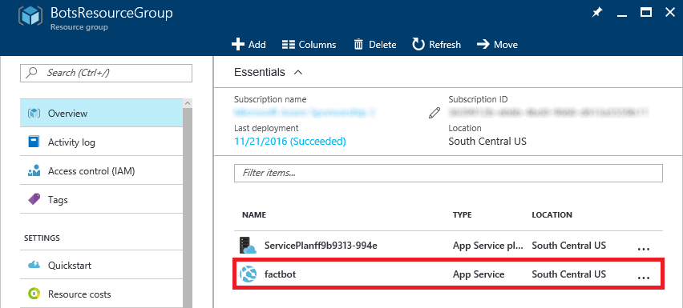
Selecting the Azure Web App
-
Click Deployment options.

Viewing deployment options
-
Click Choose Source, and then click OneDrive.
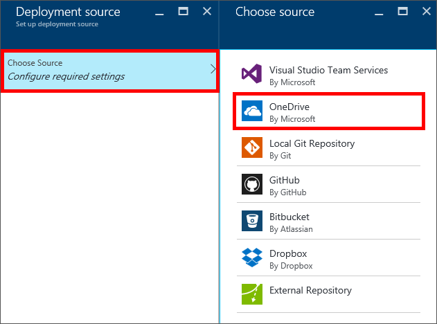
Selecting OneDrive as the deployment source
-
Click Authorization and then the Authorize button. If you are prompted for credentials, enter your Microsoft account credentials, and then click OK. If prompted to allow this app to access your info, answer yes. Once authorization is complete, click OK to close the blade.

Authorizing OneDrive
-
Leave the remaining values in the "Deployment source" blade set to the defaults, and then click OK. Your bot deployment source has now been configured.
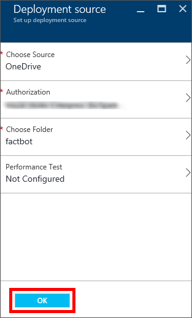
Finalizing deployment-source setup
-
Open a browser and go to OneDrive. If asked to login in, do so with your Microsoft account.
-
In OneDrive's search box, type "Azure Web Apps" (without quotation marks) and select the Azure Web Apps folder.
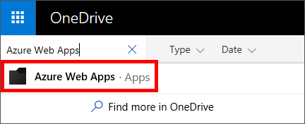
Searching OneDrive for the Azure Web Apps deployment folder
-
Click the "factbot" folder created for your bot to view the folder's contents. At this point, the folder should be empty.

Opening the factbot folder in OneDrive
-
Click Upload -> Files, and browse to the "Resources" folder included with this lab. Select both files in the "Resources" folder and click Open to upload the bot to OneDrive.
You are uploading a slightly different bot than the one you created because, among other things, this one retrieves the app ID and password from app settings rather than rely on hardcoded values.
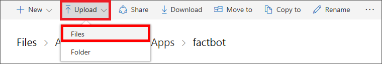
Uploading to OneDrive
-
Return to the Azure Portal and navigate back to the Web App you configured earlier in this exercise. Click Deployment options again. Notice that the blade has now changed to show that deployment will occur from OneDrive.
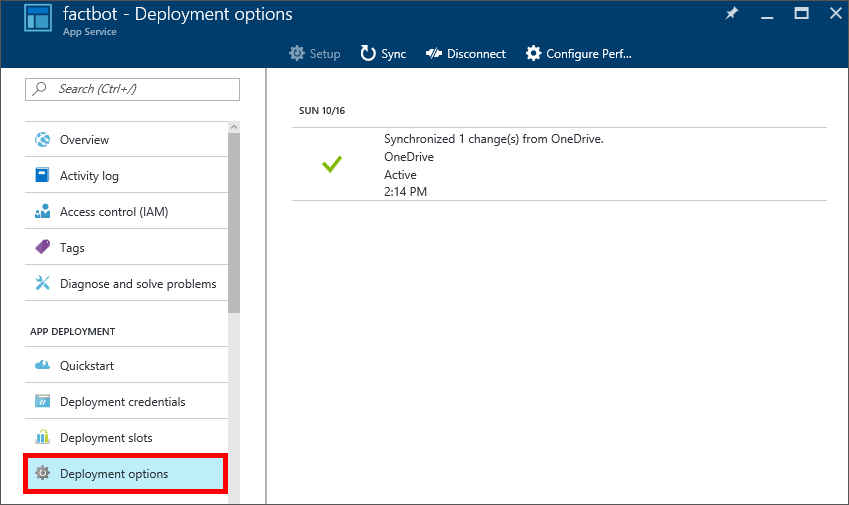
Updated deployment options
-
Click Sync, and then click Yes when asked if you are sure.
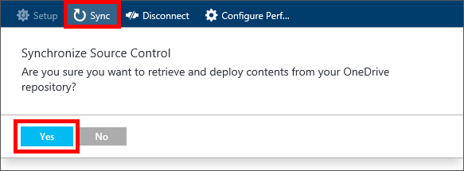
Synchronizing OneDrive deployment files
-
Click Application Settings, and then scroll down to the "App settings" section on the right.
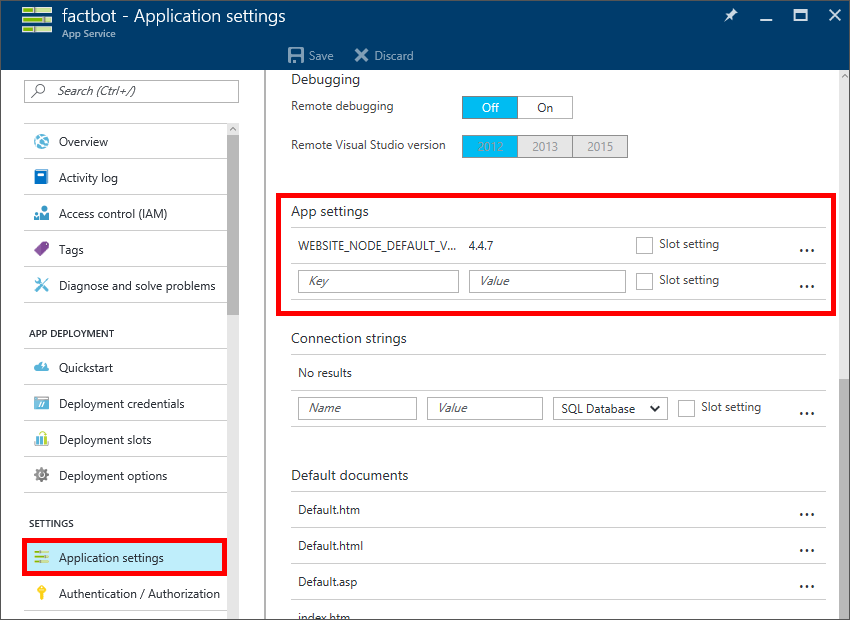
Viewing application settings
-
Add a new key named "MICROSOFT_APP_ID". Paste your bot's app ID into the value field.
-
Add a new key named "MICROSOFT_APP_PASSWORD." Paste your bot's password into the value field and then click Save at the top of the blade.
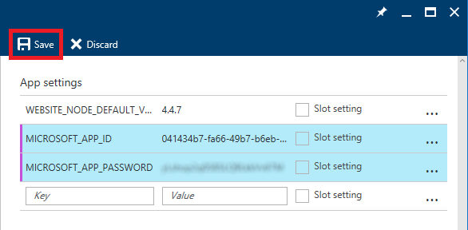
Adding the app ID and password to app settings
-
Click Console in the "DEPLOYMENT TOOLS" section on the left.
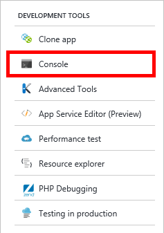
Opening the Web App Console
-
Execute the following command in the console to install the Microsoft Bot Builder SDK into your Azure Web App environment:
npm install --save botbuilder
-
Now execute the following command in the console to install the packages required to leverage REST-based messaging routes into your Azure Web App environment:
npm install --save restify
Now that your bot has been written, tested, and deployed to an Azure Web App, the final step is to test it in a connected channel.
Exercise 7: Test the bot
Once deployed, bots can be connected to channels such as Skype, Slack, SMS, and Facebook Messenger, where you can interact with them the way you would interact with any other user. In this exercise, you will test your bot with Skype. If Skype isn't already installed on your computer, please install it now. You can download Skype for Windows, macOS, and Linux from https://www.skype.com/en/download-skype/skype-for-computer/.
-
Return to the Microsoft Bot Framework portal and open the bot that you registered earlier. Locate the "Test connection to your bot" panel and click the Test button. Verify that the word "Accepted" appears, indicating that the test was successful.
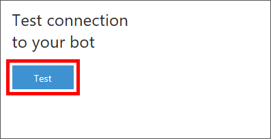
Testing the connection to your bot
-
Locate the "Channels" panel and click Edit in the row for the Skype channel.

Editing the Skype bot channel
-
Ensure that Enable Factbot on Skype is toggled ON and click I’m done configuring at the bottom of the page. Your bot is now ready to test in a Skype conversation.

Configuring the Skype bot channel
-
Click the Add to Skype button.
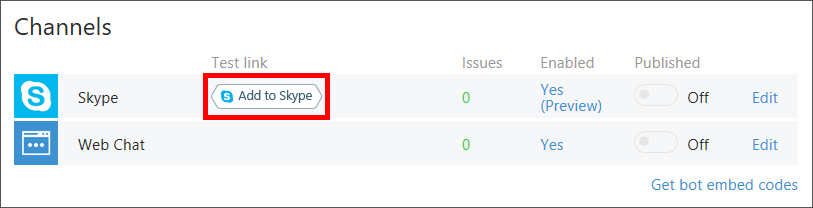
Adding Factbot to Skype
-
Click Add to Contacts to add the bot as a Skype contact. After a short delay, Skype will launch and display a new conversation thread between you and the bot.
If Skype does not automatically add Factbot to a conversation, select the bot from the "Recent" list in Skype to initiate a conversation manually.
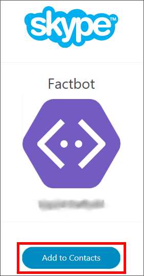
Adding Factbot to your Skype contacts
-
Start a conversation with Factbot by typing "Hello" into the Skype window. After a short delay, Factbot will begin the guided conversation you experienced in Exercise 4. Continue the conversation all the way to the end to see a random and interesting fact!
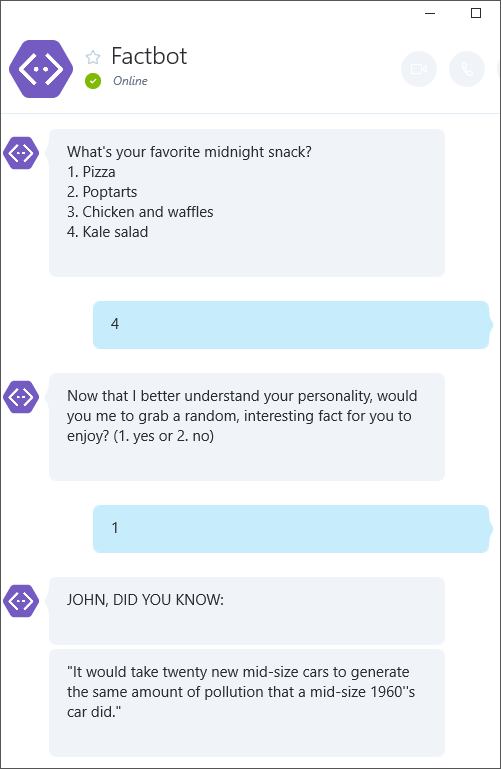
Conversing with Factbot via Skype
You now have a fully functioning bot, created with the Microsoft Bot Framework, available for anyone in the world to use. You may have noticed there are many other channels to choose from as well. Feel free to plug your bot into other channels and test it in different scenarios.
Summary
In this hands-on lab you learned how to:
- Create an Azure Web App to host a bot
- Register a bot
- Implement a bot using Visual Studio Code, Node.js, and JavaScript
- Debug the bots that you build
- Publish a bot to Azure and interact with it using Skype
There is much more that you can do to leverage the power of the Microsoft Bot Framework by incorporating dialogs, FormFlow, and Microsoft Language Understanding and Intelligence Services (LUIS). With these and other features, you can build sophisticated bots that respond to users' queries and commands and interact in a fluid, conversational, and non-linear manner. For more information, see https://blogs.msdn.microsoft.com/uk_faculty_connection/2016/04/05/what-is-microsoft-bot-framework-overview/.
Copyright 2016 Microsoft Corporation. All rights reserved. Except where otherwise noted, these materials are licensed under the terms of the Apache License, Version 2.0. You may use it according to the license as is most appropriate for your project on a case-by-case basis. The terms of this license can be found in http://www.apache.org/licenses/LICENSE-2.0.